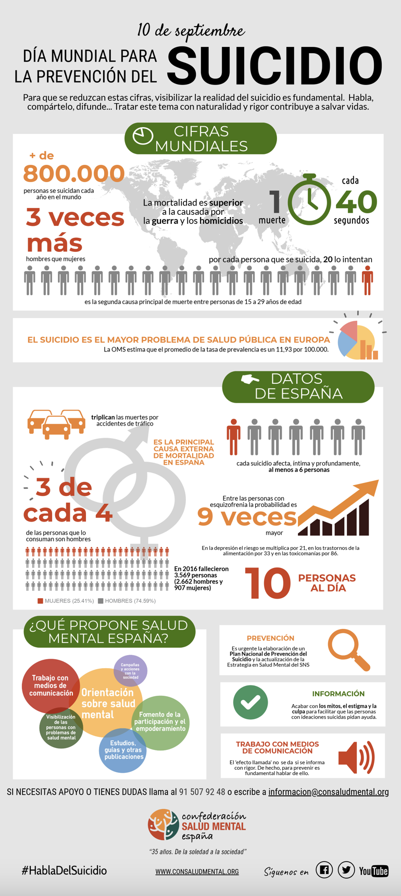

PRÁCTICA 1-COMENTARIO VISUALIZACIÓN DE DATOS
Análisis infográfico 1: SUICIDIO
-Tipo de contenido
El tema de la infografía es muy interesante e importante de tratar y difundir, de acuerdo con el día mundial para la prevención del suicidio, el pasado 10 de septiembre. Esta infografía supone un resumen de la grave situación, tratando las cifras mundiales, el caso español y las formas de combatir esta realidad.
-Estructura de la información
La estructura es esencial para la correcta comprensión de la información. La parte superior indica el tema del que trata la infografía y un pequeño texto donde se indica que el objetivo de la misma es la visibilización para su prevención. Cada pequeña parte indica un aspecto, ordenador de lo general a lo particular: la situación mundial con cifras mundiales, los datos en España y las estrategias de prevención. Todas las partes están compuestas por un subtítulo escrito en verdad, el color de la esperanza, y acompañados por cifras de gran tamaño y a color y un brevísimo texto explicativo. Los datos españoles tienen el mismo estilo, imágenes e iconos de gran tamaño y algo de letra para aclarar la imagen. El último subtítulo trata la prevención a través de distintas herramientas explicativas. La parte inferior pone información relativa a la confederación de salud mental de España, la dirección web, redes sociales y hashtag.
Esta infografía contiene de manera muy equilibrada el peso de las imágenes y el texto. El tema no es sencillo de reflejar, ya que el suicido es un aspecto muy complicado de compartir, a pesar de que el documento lo hace de manera muy completa. Utiliza emoticonos muy representativos que facilitan el entendimiento del texto y lo hace más ameno e intuitivo. Está separado por distintas secciones puestas de manera ordenada aunque demasiado llena podríamos decir, es una infografía llena de contenido
-Colores utilizados
Un aspecto a mejorar podrían ser los colores utilizados, ya que podrían utilizarse colores de tonalidades similares o que queden bien, la imagen total es demasiado colorida y eso despista al lector. Un aspecto positivo a destacar es la propia fuente porque la realiza una organización profesional del campo del que habla, y entendemos que los datos y los procesos para llegar hasta ellos han sido los correctos.
-Fuente
Otro aspecto a destacar es la utilización de las fuentes que dota a la infografía de un carácter más crítico. Es una infografía publicada por la propia confederación de salud mental en España.
-Justificación de la infografía escogida
Es un tema muy necesario que no se trata lo suficiente en los medios de comunicación, por lo que una infografía de esta temática es sumamente importante de difundir. En general es una infografía completa con algunos aspectos de mejora en cuanto a la estética, respecto al contenido y fuente es una buena infografía.